Selection and evolution in B cells
Antibodies co-evolve with pathogens

B cells determine antibody diversity

Structure of a B cell receptor

Origins of B cell receptor diversity
VDJ recombination
Affinity maturation
VDJ loci

VDJ recombination

Selection on naive repertoire
Stability
Autoreactivity
Germinal centers

Affinity maturation

Dynamics in one GC
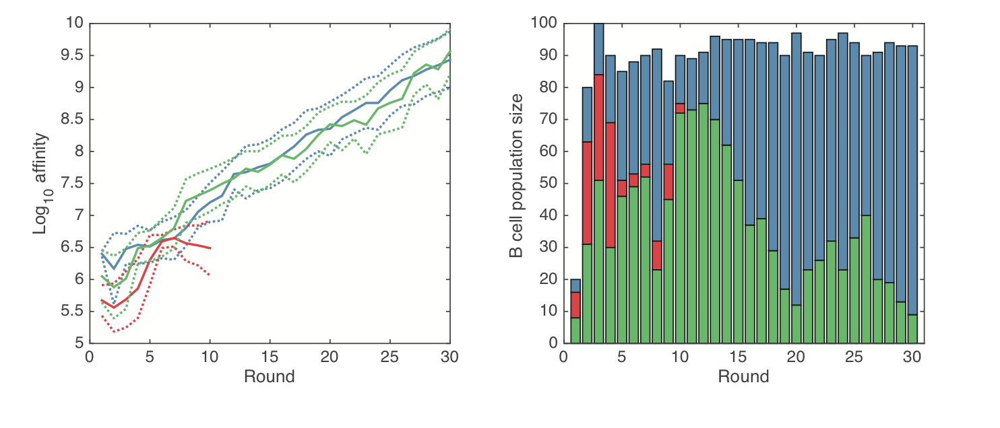GC B cells evolve

AID induces somatic hypermutation

Mutation rate varies over the variable region
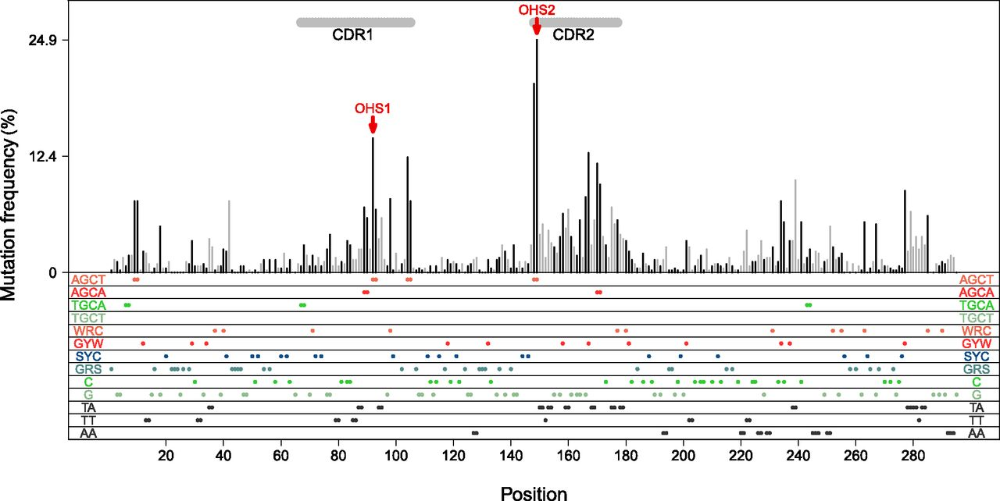GCs produce plasma and memory cells
Memory cells can evolve further
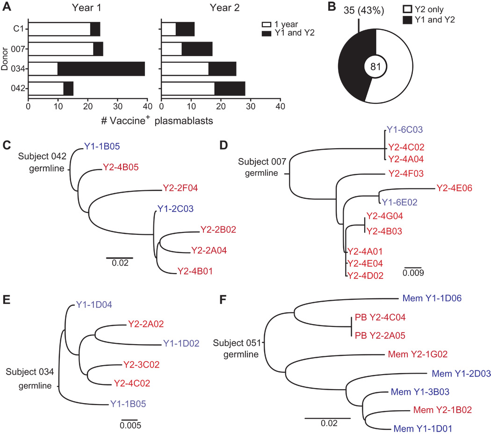Ab feedback may diversify the repertoire

Clones can be long-lived

Broadly neutralizing antibodies are often highly diverged

Broadly neutralizing antibodies to flu elusive

Why do some people develop broadly neutralizing antibodies?
Can we induce them in everyone?
Will they dominate?
"Restricted" responses to epitopes

Genotype affects response to H5N1 vaccination
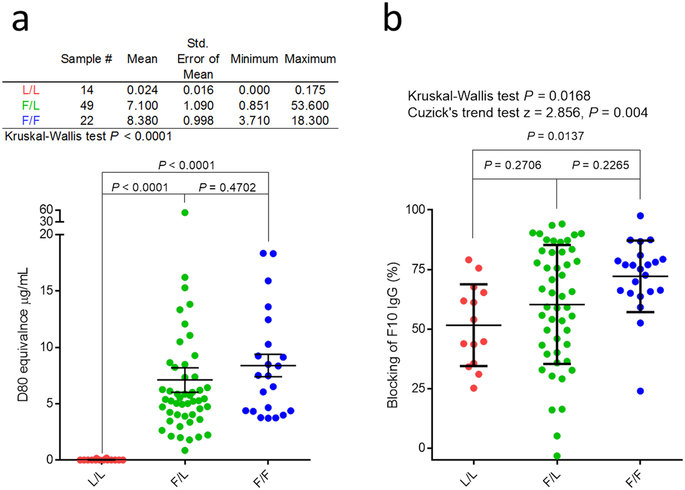Allele copy number affects clone frequency
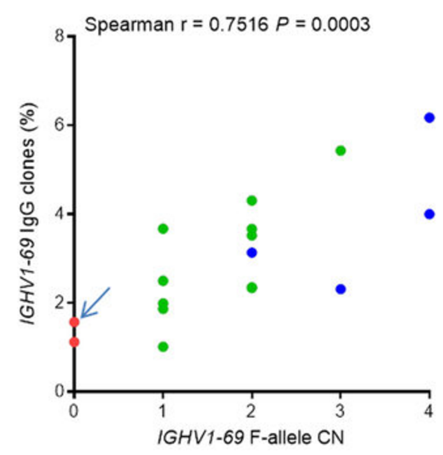Ethnic differences in copy number
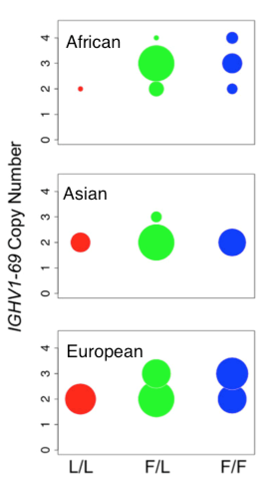A story about a sample of people born between 1965 and 1979...
In 2013, H1N1 acquired K166Q

Uneven recognition

Homology with childhood strain

Recapitulation in ferrets

Strain phenotypes depend on host

Broad cohort-specific effects
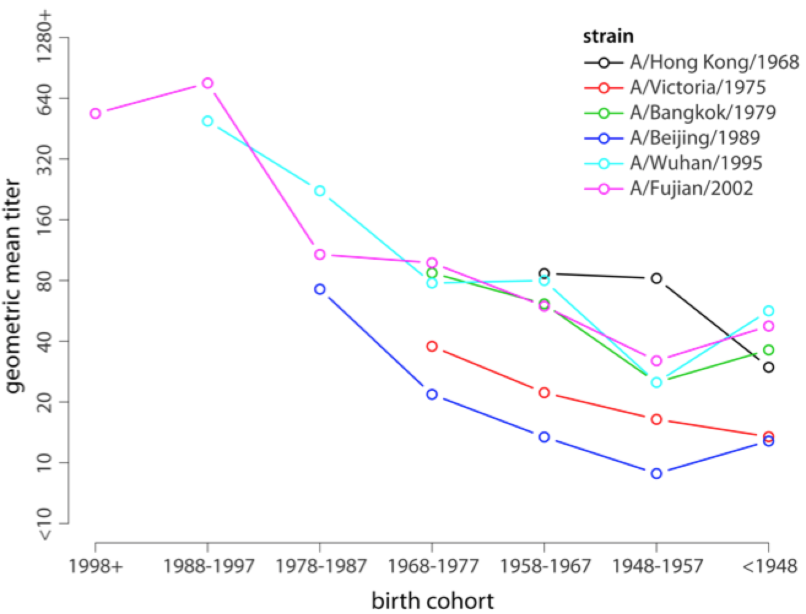"Antigenic seniority"

What's so special about early infections?
A general model of sin
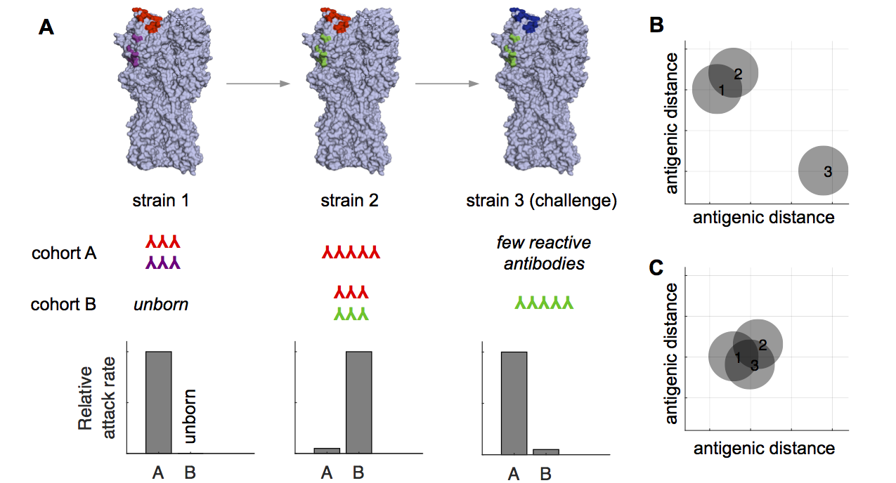Early infections affect vaccine response
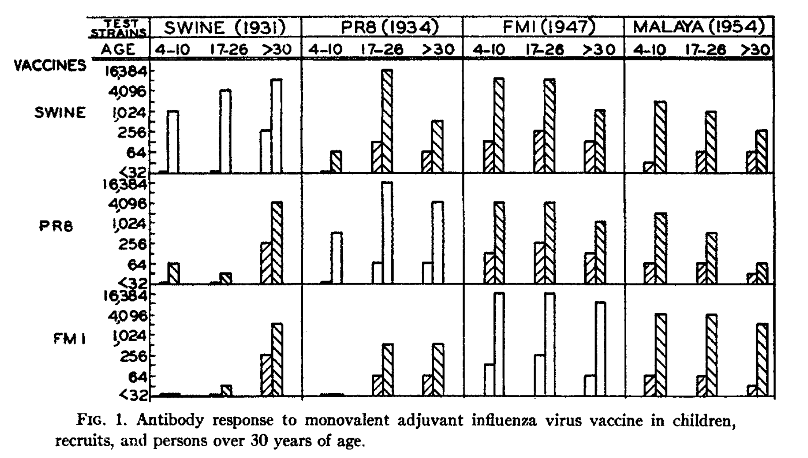Response to 2009 H1N1 vaccine
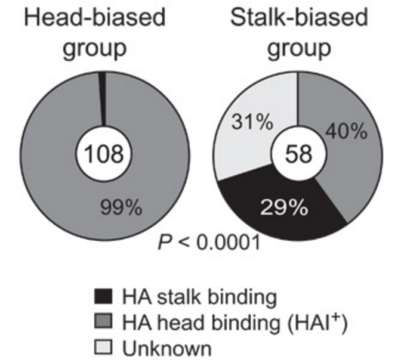Stalk responses can fade

Stalk antibodies bind with lower avidity

Stalk antibodies are more polyreactive
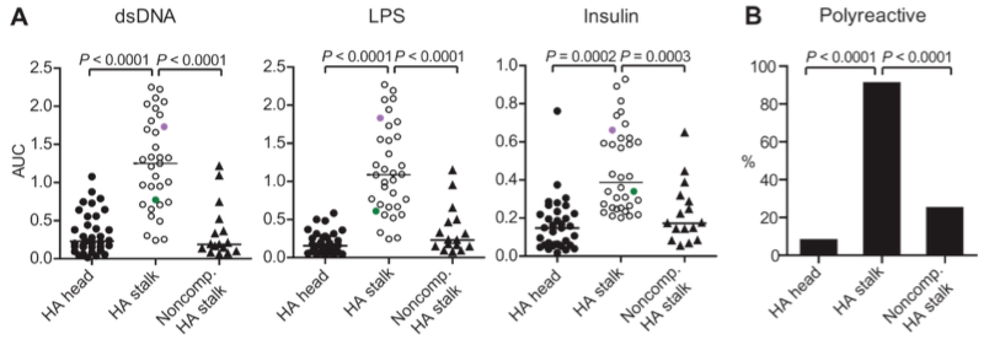Potential factors influencing specific antibody responses
Host genotype
Order (Age?) of infection
Immunogenicity
Autoreactivity
In U.S., flu vaccine coverage is high
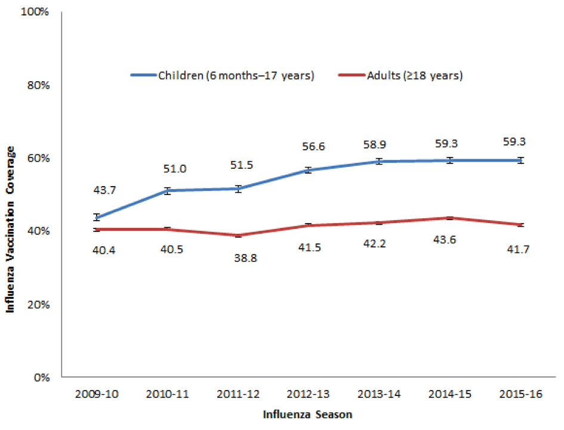In RCT, vaccine provides high indirect protection
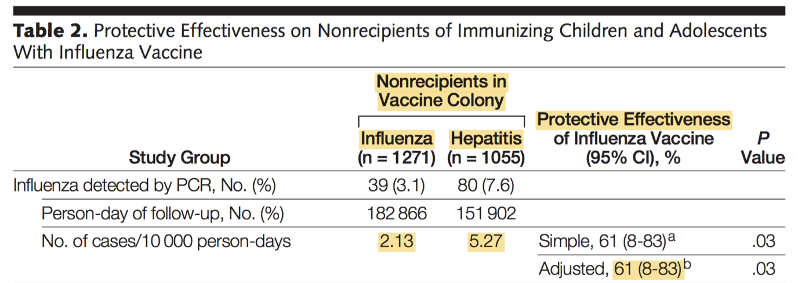Influenza vaccine effectiveness is low
H3N2: 33% (95% CI: 26-39)
B: 54% (46-61)
pH1N1: 61% (57-65)
H1N1: 67% (29-85)
What's going on?
Poor strain selection (antigenic mismatch)
Egg adaptations (antigenic mismatch)
Interaction with pre-existing immune responses
Sin diminishes egg effects in 2012-2013?
Ferrets recognize egg adaptations, but humans don't 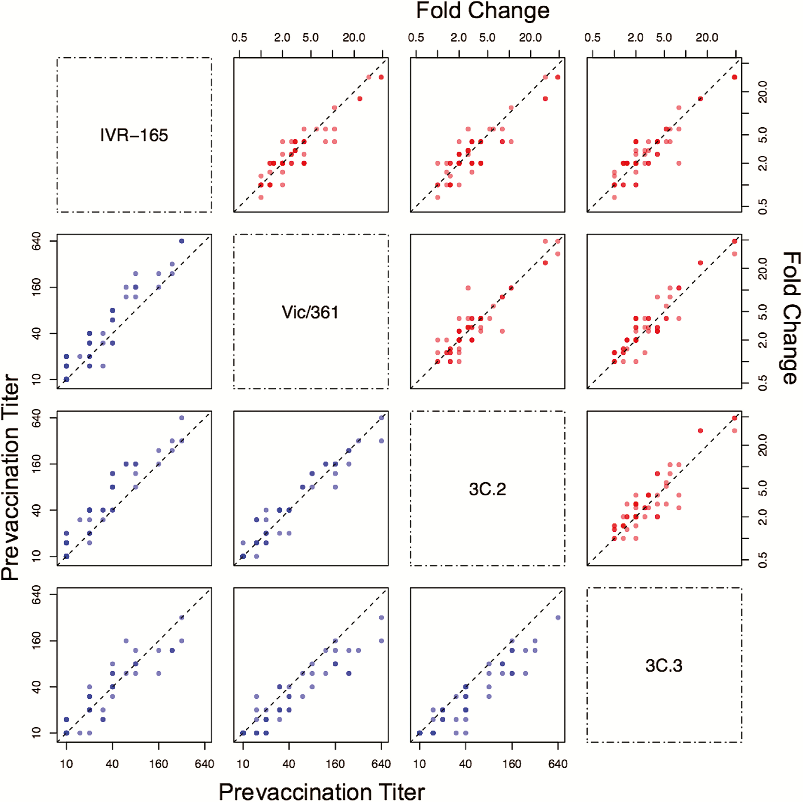